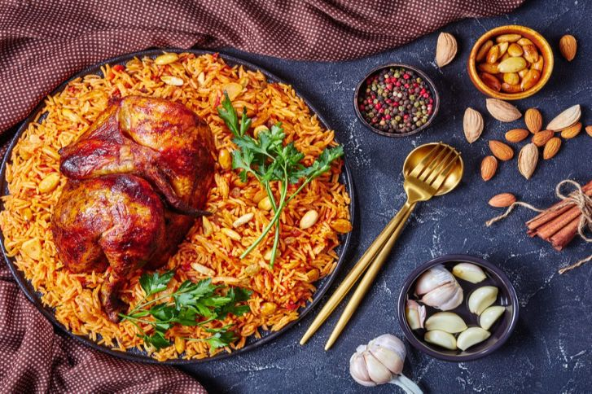

Speise
Kabseh

Zutaten: für 6 Personen
- 1 kg Hähnchen, in Stücke zerteilt
- 50 ml Öl (Sonnenblumenöl)
- 2 EL Olivenöl
- 2 m.-große Zwiebel(n), gehackt
- 1 Dose Tomatenmark
- 2 Tomate(n), geschält und in Stücke geschnitten
- 4 Zehe/n Knoblauch, fein gehackt
- 2 Möhre(n), geschält und in Würfel geschnitten
- etwas Orangenschale, unbehandelt, abgerieben
- 4 Gewürznelke(n)
- 4 Körner Kardamom
- 3 Stange/n Zimt
- Salz und Pfeffer
- 500 g Reis (Langkornreis)
- 50 g Mandel(n), geschält
- 50 g Rosinen
- 50 g Pinienkerne
- 700 ml Wasser, warm
Zubereitung
- Die gehackten Zwiebeln im Öl anschwitzen.
Die Hähnchenstücke, das Tomatenmark, die Tomatenstücke und den Knoblauch dazugeben
und ca. 5 Min. andünsten.
- 700 ml Wasser über die Hähnchenstücke gießen. Die Möhrenstücke, etwas geriebene Orangenschale,
Kardamom, Zimt, Nelke, Salz und Pfeffer hinzufügen und bei mittlerer
Temperatur ca. 20 - 25 Minuten kochen, bis das Hähnchen durch ist.
Die Hähnchenstücke aus der Brühe nehmen und warmstellen.
- Dann den Reis im Topf mit der Brühe kochen.
Auf mittlerer Stufe ca. 35 - 40 Minuten kochen lassen,
bis der Reis die Flüssigkeit aufgenommen hat und gar ist.
Jede Sorte Reis reagiert unterschiedlich auf die Flüssigkeitsmenge,
man muss etwas nach Gefühl beim Reis arbeiten und gut abschätzen können,
wie viel Flüssigkeit der Reis braucht.
Die Menge Wasser 700 ml zu den 500 g Reis kann variieren.
Eventuell Wasser nachgießen, wenn der Reis nicht weich sein sollte.
- Die Mandeln und Pinienkerne im Olivenöl goldbraun rösten.
Auf einer großen Platte den Reis anrichten,
die Hähnchenteile rundherum oder über den Reis legen.
Mit Mandeln, Rosinen und Pinienkernen garnieren.